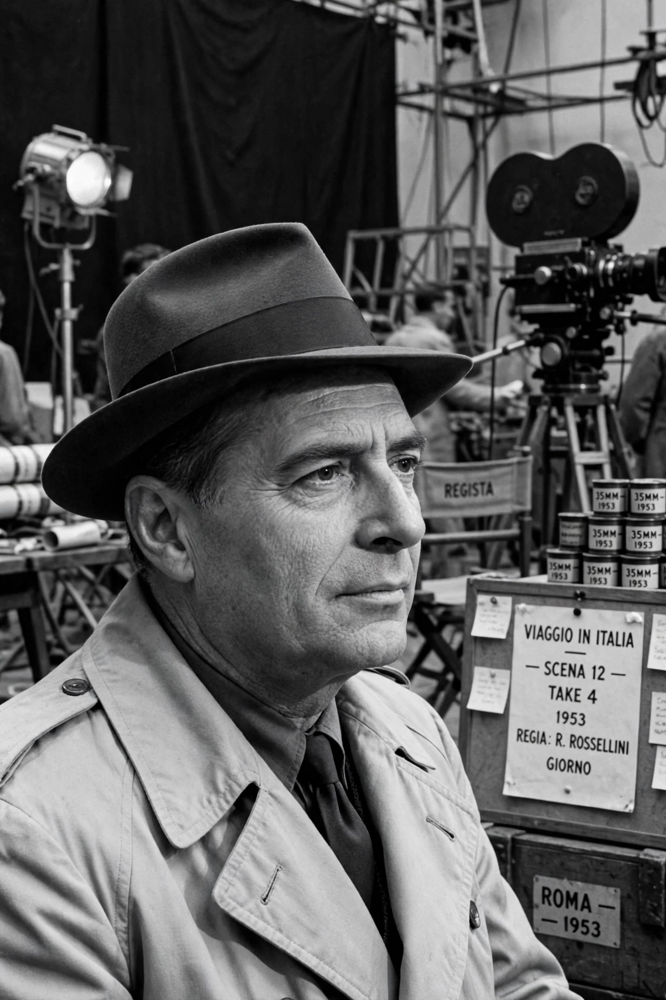

| Roberto Rossellini | |
|---|---|
| Born | 8 May 1906, Rome, Kingdom of Italy |
| Died | 3 June 1977 (aged 71), Rome, Italy |
| Occupation | Film director, screenwriter, producer |
| Years active | 1936–1977 |
| Spouses | Marcella De Marchis; Ingrid Bergman; Sonali Das Gupta |
| Children | Including Isabella Rossellini |
Roberto Gastone Zeffiro Rossellini (8 May 1906 – 3 June 1977) was an Italian film director, screenwriter and producer. He was one of the most prominent directors of the Italian neorealist movement in film, and his 1945 film Rome, Open City is widely considered the movement's founding work.
Rossellini was born in Rome into a bourgeois family; his father built some of the city's first cinemas, which gave the young Roberto free access to films. During the Fascist era he made documentaries and features under the regime, including the "Fascist trilogy" of war films The White Ship (1941), A Pilot Returns (1942) and The Man with a Cross (1943), working with Francesco De Robertis and the young Federico Fellini.
Immediately after the liberation of Rome, Rossellini shot Rome, Open City (1945) on scavenged film stock in the streets of the city, mixing professional actors such as Anna Magnani with non-professionals. It won the Grand Prix at Cannes and became an international sensation. He followed it with Paisan (1946), six episodes following the Allied advance through Italy, and Germany, Year Zero (1948), filmed in the ruins of Berlin — together forming his "War Trilogy".
In 1949 the Swedish-American star Ingrid Bergman wrote to Rossellini offering to work with him. Their collaboration and affair — both were married — caused a scandal in the United States. They married in 1950 and made a series of films together: Stromboli (1950), Europa '51 (1952), Journey to Italy (1954) and Fear (1954). Journey to Italy, dismissed on release, was later hailed by the critics of Cahiers du Cinéma as a founding work of modern cinema. They had three children, including the actress Isabella Rossellini, before separating in 1957.
Rossellini returned to acclaim with Il Generale Della Rovere (1959), which won the Golden Lion at Venice, and Viva l'Italia! (1961) about Garibaldi. From the 1960s he largely abandoned cinema for television, making a vast cycle of didactic historical films and miniseries on figures such as Socrates, Descartes, Pascal, Augustine and Louis XIV (The Taking of Power by Louis XIV, 1966), as well as the multi-part documentary series India: Matri Bhumi (1959), made during a period in India during which he married Sonali Das Gupta. His final feature was The Messiah (1975).
Rossellini's influence on subsequent filmmakers — from the French New Wave to Martin Scorsese and the Iranian cinema — is immense. His belief that cinema should teach as well as move shaped his later encyclopaedic television projects. He died of a heart attack in Rome in 1977 while planning a film about Karl Marx.